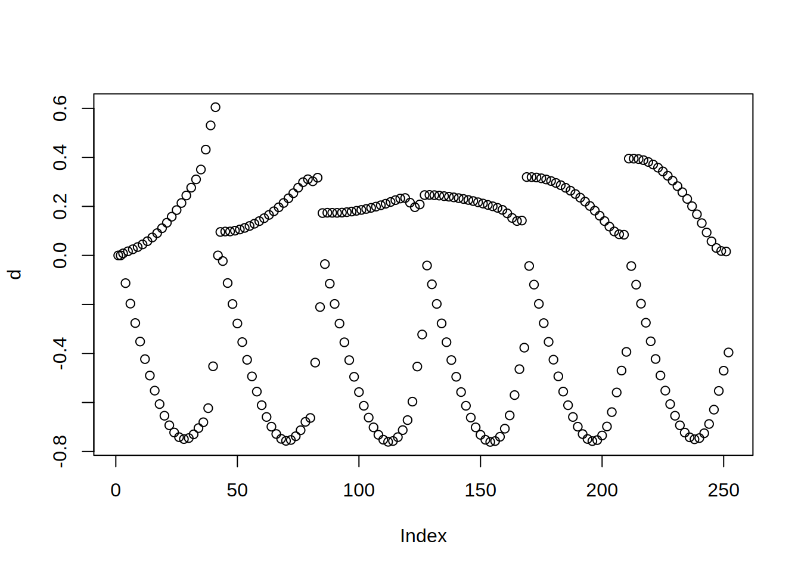
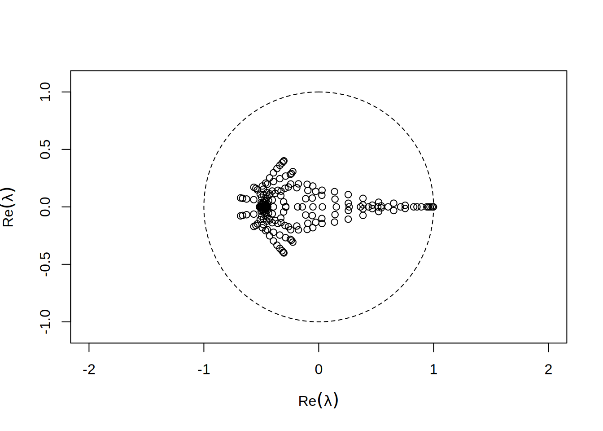

Metody Numeryczne - Skrypt 2
L. Laniewski-Wollk
Wczytajmy pierw macierz sztywności z pliku:
Możemy sobie teraz wyświetlić gdzie ma ona niezerowe elementy:
Możemy teraz zobaczyć jej wartości własne
Jako, że macierz jest symetryczna wszystkie wartości własne są rzeczywiste. Warto zauważyć, że trzy ostatnie wartości własne są praktycznie równe zero:
| \(\lambda_{1}\) | \(\lambda_{2}\) | \(\cdots\) | \(\lambda_{248}\) | \(\lambda_{249}\) | \(\lambda_{250}\) | \(\lambda_{251}\) | \(\lambda_{252}\) |
|---|---|---|---|---|---|---|---|
| 418.4178 | 411.8008 | \(\cdots\) | 1.554674 | 0.3134155 | 0 | 0 | 0 |
Jest to związane z wolnymi stopniami swobody naszego układu. Możemy pozbyć się tych stopni zastępując odpowiednie wiersze wierszami macierzy jednostkowej
fix = c(1,2,42) # Wybrane wiersze
I = diag(nrow(S)) # Macierz jednostkowa o odpowiednim rozmiarze
S[fix,]=I[fix,] # Zastępujemy wiersze
S[,fix]=I[,fix] # Zastępujemy kolumny (by macierz pozostała symetryczna)
lam = eigen(S)$val
barplot(lam,main="Wartości właśne S")Teraz ostatnie wartości są już niezerowe
| \(\lambda_{1}\) | \(\lambda_{2}\) | \(\cdots\) | \(\lambda_{248}\) | \(\lambda_{249}\) | \(\lambda_{250}\) | \(\lambda_{251}\) | \(\lambda_{252}\) |
|---|---|---|---|---|---|---|---|
| 418.4139 | 411.7858 | \(\cdots\) | 1 | 1 | 0.7062446 | 0.208298 | 0.0559314 |
Rozważmy teraz przyłożenie siły w 80-tym stopniu swobody. Wektor sił \(F\) będzie miał zera wszędzie poza 80-tym elementem.
Odkształcenie spowodowane taką siłą to \(d = S^{-1}F\).

Odkształcenie to w tej formie trudno zinterpretować. Po pierwsze co drugi element oznacza odkształcenie w X a co drugi w Y:
Tutaj warto zauważyć, że choć macierz \(S\) jest rzadka (ma mało niezerowych elementów) tak macierz \(S^{-1}\) będzie pełna:
Można to sobie wyobrazić w następujący sposób. \(k\)-ta kolumna macierzy odwrotnej \(S^{-1}\) jest równa \(S^{-1}v\), gdzie \(v\) to wektor samych zer z jedynką na \(k\)-tym miejscu. Można więc powiedzieć, że \(k\)-ta kolumna macierzy \(S^{-1}\) to odkształcenie belki przy przyłożeniu jednoskowej siły w \(k\)-tym stopniu swobody. Jak wiemy, niezależnie w którym stopniu swobody przyłożymy siłę, odkształcenia będą występowały we wszystkich stopniach swobody. Oznacza to, że wszystkie kolumny macierzy \(S^{-1}\) będą pełne niezerowych elementów.
Zobaczmy 80-tą kolumnę:
Koszt policzenia \(S^{-1}\) jest bardzo wysoki. Nawet przechowanie takiej macierzy może być niemożliwe. Dlatego w większości zagadnień numerycznych nigdy nie liczona jest bezpośrednio odwrotność macierzy, lecz rozwiązywany jest zadany układ \(Sx=F\). W naszym wypadku prawa strona to wektor sił \(F\), zaś niewiadoma \(x\) to odkształcenie. Rozwiązać taki układ można na wiele sposobów. Dla dużych układów liniowych i nieliniowych wykożytujemy metody iteracyjne. Mają one na celu nie roziwiązanie problemu w ogólności (znalezienie \(S^{-1}\)) lecz w jak najmniejszej ilości iteracji znalezienie najlepszego przybliżenia rozwiązania \(x\). Lecz jak można sprawdzić czy rozwiązanie jest bliskie dokładnego, jeśli dokładne nie jest znane?
Weźmy dowolny wektor:
Jedyne co możemy stwierdzić to jak daleko jesteśmy od spełnienia naszego układu, odejmując lewą od prawej strony równania:
Taki wektor nazywamy residualem. Zazwyczaj by go zmierzyć jedną liczbą mówimy że residual to \(\|r\|_2=\sqrt{\sum_ir_i^2}\). Aktualnie wynosi on 2909.149542.
Zauważmy, że residual mówi nam jak daleko jesteśmy od rozwiązania, ale nie mówi nam praktycznie w jakim kierunku mamy iść. Jesteśmy w \(x\), chcemy być \(S^{-1}F\), lecz jedyne co wiemy to nie kierunek \(S^{-1}F - x\), lecz \(F - Sx\). Żeby wiedzieć gdzie należy iść, musimy mieć jakiekolwiek przybliżenie \(S^{-1}\). Takie przybliżenie nazywamy preconditionerem. Zwyczajowo piszemy, że construujemy \(P\simeq S\), tak by \(P^{-1}\simeq S^{-1}\) - lecz w rzeczywistości należy myśleć o preconditionerze jako o operatorze \(P^{-1}\), ponieważ wewnątrz programu, tylko on jest realizowany. Najprostrzym przykładem preconditionera jest odwrotność przekątnej macierzy (preconditioner Jacobiego):
Nie ma dobrej metody stwierdzenia, że dana macierz będzie dobrym preconditionerem dla innej, poza zbadaniem właściwości \(P^{-1}S\). Chcielibyśmy by macierz ta była możliwie bliska macierzy jednostkowej. W dużych zagadnieniach oczywiście takiej możliwości zbadania nie mamy, lecz w naszym przykładzie możemy przyjżeć się tej macierzy.
Widzimy, że w porównaniu z \(S\) macierz ta ma wartości zgromadzone w około \(1\).
Patrząc w dziedzinie zespolonej, zależy nam by \(\lambda\) były wszystkie jak najbardziej zgromadzone blisko \(1\):

Podobnie prostym preconditionerem jest wzięcie za \(P\) dolnej trójkątnej częsci \(S\) (preconditioner Gaussa-Seidla):
Taka macierz jest też bardzo łatwa do odwrócenia. Daje ona bardzo przyzwoity rozkład wartości własnych:
Widzimy natychmiast, że wartości te nie są już czysto rzeczywiste - ponieważ \(P\) nie jest teraz symmetryczna.
Weźmy więc nasz najprostrzy preconditioner
I w każdej iteracji przesuńmy się o: \(P^{-1}r \simeq S^{-1}r = S^{-1}(F-Sx) = S^{-1}F-x\). To powinno nas doprowadzić do rozwiązania:
x = x0
for (i in 1:itmax) {
r = F - S %*% x
p = solve(P,r)
x = x + p
if (residual(i,r,"Jacobi")) break
}
draw.residuals()
Widzimy natychmiast, że residual zamiast spadać rozbiega się wykładniczo. Jeśli spojżymy na naszą procedurę, to odmnarza ona nieustannie \(x\) przez \((I-P^{-1}S)\) ponieważ: \[x = x + p = x + P^{-1}r = x + P^{1}(F-Sx) = (I-P^{-1}S)x + P^{-1}F\] Oznacza to, że wartości własne \((I-P^{-1}S)\) poza jednostkowym okręgiem będą powodować rozbierzność.
By uniknąć takiej sytuacji możemy wprowadzić współczynnik relaksacji \(\alpha < 1\), który zeskaluje wartości własne by mieściły się w stabilnym okręgu:
Metoda z tak dobranym współczynnikiem jest już zbierzna:
delete.residuals("Jacobi")
alpha = 0.7
x = x0
for (i in 1:itmax) {
r = F - S %*% x
p = solve(P,r)
x = x + alpha*p
if (residual(i,r,"Jacobi alpha=0.7")) break
}
draw.residuals()Weźmy teraz znów jako preconditioner macierz górno-trójkątną.
Warto zauważyć, że dla preconditionera Gaussa-Seidla, można dobrać współczynnik \(\alpha\) nawet większy od jedynki (nadrelaksacja):

alpha = 1.5
x = x0
for (i in 1:itmax) {
r = F - S %*% x
p = solve(P,r)
x = x + alpha*p
if (residual(i,r,"Gauss-Seidl alpha=1.5")) break
}
draw.residuals()Łatwo zauważyć że dobór jednej wartości \(\alpha\) na wszystkie iteracje jest nieoptymalny. W każdym kroku należałoby dobierać \(\alpha\) oddzielnie. Jeśli weźmiemy sume kwadratów residuali: \(f(\alpha) = \sum_i r_i^2 = r^T r\), to możemy dobrać tak \(\alpha\) by \(f\) było minimalne po iteracji. Residual po iteracji \(r^{(n+1)}\) jest równy: \[r^{(n+1)} = F - Sx^{(n+1)} = F - Sx^{n} - \alpha Sp = r^{(n)} - \alpha Sp\] Różniczkując \(f\) po \(\alpha\)i przyrównując pochodną do zera dostajmey: \[\alpha=\frac{r^T (Sp)}{(Sp)^T(Sp)}\]
Zobaczmy taką metodę dla preconditionera diagonalnego:
By lepiej zobaczyć co się dzieję zapiszemy wszystkie kolejne \(\alpha\) w wektorze, by później je zwizualizować.
x = x0
alphas = NULL
for (i in 1:itmax) {
r = F - S %*% x
p = solve(P,r)
Ap = S %*% p
alpha = sum(r * Ap)/sum(Ap * Ap)
x = x + alpha*p
alphas = c(alphas,alpha)
if (residual(i,r,"Basic MINRES")) break
}
draw.residuals()Jak widać w przy takim optymalnym doborze \(\alpha\) residual monotonicznie spada. Możemy teraz zobaczyć jakie wartości przyjmował ten współczynnik w trakcie procesu zbierzności:
Jak widać Wykraczają one wielokrotnie poza zakres stabinych współczynników podrelaksacji dla metody Jacobiego. Oznacza to że w danej iteracji współczynnik \(\alpha\) nie jest ograniczony przez najbardziej odstające wartości własne \(P^{-1}S\).
Dość niejednorodne zachowanie metody MINRES wynika z częstej sytuacji w której to co zyskaliśmy w jednym kroku “tracimy” w następnym. Metoda monotonicznie redukuje residual, więc w rzeczywistości nie “tracimy” w kolejnej iteracji, co raczej “nie uzyskujemy tyle ile byśmy mogli”. Można sobie to wyobrazić w następujący sposób. Załużmy że chcemy dotrzeć do portu na jeziorze, lecz z powodu wiatru możemy wykonywać tylko ruchy po skosie. Jeśli będziemy płynąć zawsze w danym kierunku, aż będziemy najbliżej portu (minimalne residuum) i dopiero wtedy wykonywać zwrot, w następnym ruchu musimy znów dużo przepłynąć.
Weźmy więc jezioro i port (\(b\)) na nim.
Do tego weźmy macierz \(A\) która będzie realizować zwykłą odległość euklidesową i preconditioner który będzie dawał nam skośne kierunki ruchu:
Dla zadanego punktu początkowego \(x_0\) możemy policzyć residual i kierunek \(p\):
Dla takiego układu optymalna \(\alpha\) to krok dla którego punkt \(x_1\) będzie najbliżej portu. Można ją policzyć za pomocą tego samego wzoru:
Wynosi ona 0.6535693, więc łódka powędruje nie cały wektor \(p\) lecz jego kawałek.
Jednak \(\alpha\) w nowym kierunku jest wysoka (2.7389444) i punkt x znów przesunie się daleko po skosie.
draw.lake(b)
x = c(-0.5,0.5)
for (i in 1:12) {
r = b - A %*% x
p = solve(P,r)
draw.boat(x,p,NA)
Ap = A %*% p
alpha = sum(r * Ap)/sum(Ap * Ap)
x = x + alpha*p
}By polepszyć zbierzność, możemy zachować poprzedni kierunek \(p\) i uzyć go do poprawienia następnej iteracji. Załużmy, że preconditioner wskazuje nam pewien kierunek \(p=P^{-1}r\), zaś w poprzedniej iteracji poruszyliśmy się w kierunku \(q\). Możemy usunąć część \(p\) która już w poprzedniej iteracji uzyskaliśmy modyfikując kierunek \(p\) za pomocą \(p' = p - \beta q\). Stosując analogiczne rozumowanie jak porzednio otrzymamy \(\beta=\frac{(Sq)^T(Sp)}{(Sq)^T(Sq)}\), a dokładniej: \[\beta=\left[(Sq)^T(Sq)\right]^{-1}\left[(Sq)^T(Sp)\right]\]
x = x0
for (i in 1:itmax) {
r = F - S %*% x
p = solve(P,r)
if (i != 1) {
Ap = S %*% p
Aq = S %*% q
beta = sum(Ap * Aq)/sum(Aq * Aq)
p = p - beta * q
}
Ap = S %*% p
alpha = sum(r * Ap)/sum(Ap * Ap)
x = x + alpha*p
if (residual(i,r,"MINRES + beta")) break
q = p
}
draw.residuals()Widać natychmiast, że działanie tak zmodyfikowanej metody MINRES jest szybsze, ale też bardziej stabilne (bez długich płaskich fragmentów). Rozumowanie takie można pociągnąć dłużej i zachowywać wszystkie wcześniejsze wektory, by użyć ich by poprawiać każdy kolejny kierunek.
x = x0
q = NULL
for (i in 1:itmax) {
r = F - S %*% x
p = solve(P,r)
if (i != 1) {
Ap = S %*% p
Aq = S %*% q
beta = solve(t(Aq) %*% Aq, t(Aq) %*% Ap)
p = p - q %*% beta
}
Ap = S %*% p
alpha = sum(r * Ap)/sum(Ap * Ap)
x = x + alpha*p
if (residual(i,r,"MINRES + beta (full)")) break
q = cbind(p,q)
}
draw.residuals()Taka metoda ma bardzo szybką zbierzność, lecz wymaga w ogólności przechowywania bardzo dużej ilości wektorów. Wymaga także odwracania macierzy \(\left[(Sq)^T(Sq)\right]\) która z iteracji na iterację robi się coraz większa. Macierz ta jest też często źle uwarunkowana i poprawna implementacja tej metody wymaga troche dodatkowej uwagi. Zazwyczaj resetuje się zestaw wektorów \(q\) co jakiś czas by uniknąć narastających problemów.
Dodatnio określona macierz symetryczna
Jeśli macierz \(A\) jest symmetryczna, to rozwiązanie układu \(Ax=b\) jest równoważnie nie tylko z minimalizacją residualu (\(r^Tr\)), ale też z minimalizacją \(a(x) = x^TAx - 2 x^T b\). Jedyna różnica jaka z tego wynika, to inna formuła na \(\alpha\) i \(\beta\): \[\alpha=\frac{r^T A p}{p^T A p}\] \[\beta=\left[q^T A q\right]^{-1}\left[q^T A p\right]\]
x = x0
q = NULL
for (i in 1:itmax) {
r = F - S %*% x
p = solve(P,r)
if (i != 1) {
Aq = S %*% q
beta = solve(t(Aq) %*% q, t(Aq) %*% p)
p = p - q %*% beta
}
Ap = S %*% p
alpha = sum(r * p)/sum(p * Ap)
x = x + alpha*p
if (residual(i,r,"Symmetric, positive MINRES (full)")) break
q = cbind(p,q)
}
draw.residuals()Taka metoda ma także bardzo dobrą zbierzność. Widać jednak na wykresie, że zbierzność jej jest nie monotoniczna:
Nie jest to niespodziewane, ponieważ minimalizujemy teraz \(x^TAx-xb\) (i funkcja ta monotocznie spada), a nie \(\sum_i r^2_i\).
To czego nie widać odrazu, to to, że wektor \(\beta\) we wszystkich iteracjach ma tylko jeden niezerowy element (odpowiadający \(q\) bezpośrednio z poprzedniej iteracji). Dla przykładu \(\beta\) z ostatniej iteracji to:
| \(\beta_{1}\) | \(\beta_{2}\) | \(\cdots\) | \(\beta_{105}\) | \(\beta_{106}\) | \(\beta_{107}\) | \(\beta_{108}\) | \(\beta_{109}\) |
|---|---|---|---|---|---|---|---|
| -0.2660422 | 0 | \(\cdots\) | 0 | 0 | 0 | 0 | 0 |
Nie jest to przypadek, tylko analityczna konsekwencja poprzednich iteracji. Pokazanie tego pozostawiam jako dobre ćwiczenie dla czytelnika. Właściwość ta (przypominam: dla macierzy symmetrycznych i dodatnio określonych) powoduje, że wystarczy zapisać jeden wektor \(q\) by uzyskać tak samo dobrą zbierzność jak przy zapisywaniu wszystkich. Taka metoda nazywa się Conjugate Gradient:
x = x0
for (i in 1:itmax) {
r = F - S %*% x
p = solve(P,r)
if (i != 1) {
Aq = S %*% q
beta = sum(Aq * p)/sum(Aq * q)
p = p - q %*% beta
}
Ap = S %*% p
alpha = sum(r * p)/sum(p * Ap)
x = x + alpha*p
if (residual(i,r,"Conjugate Gradient")) break
q = p
}
draw.residuals()Warto na koniec zauważyć, że metoda ta ma na tyle dobrą zbierzność, że możemy jej użyć nawet bez jakiegokolwiek preconditionera (i troche przeorganizować kolejność obliczeń):
x = x0
r = F - S %*% x
q = r
for (i in 1:itmax) {
if (residual(i,r,"Conjugate Gradient (no precond)")) break
Aq = S %*% q
alpha = sum(r * q)/sum(q * Aq)
x = x + alpha*q
r = r - alpha*Aq
beta = sum(r * Aq)/sum(q * Aq)
q = r - beta * q
}
draw.residuals()Ilość iteracji potrzbnych do osiągnięcia wymaganego residuum:
it = tapply(resid$iteration,resid$name,max)
it[it==itmax] = paste(">",itmax)
kable(data.frame(Iteracji=it))| Iteracji | |
|---|---|
| Jacobi alpha=0.7 | > 2000 |
| Gauss-Seidl alpha=1.5 | > 2000 |
| Basic MINRES | > 2000 |
| MINRES + beta | 551 |
| MINRES + beta (full) | 109 |
| Symmetric, positive MINRES (full) | 110 |
| Conjugate Gradient | 110 |
| Conjugate Gradient (no precond) | 126 |